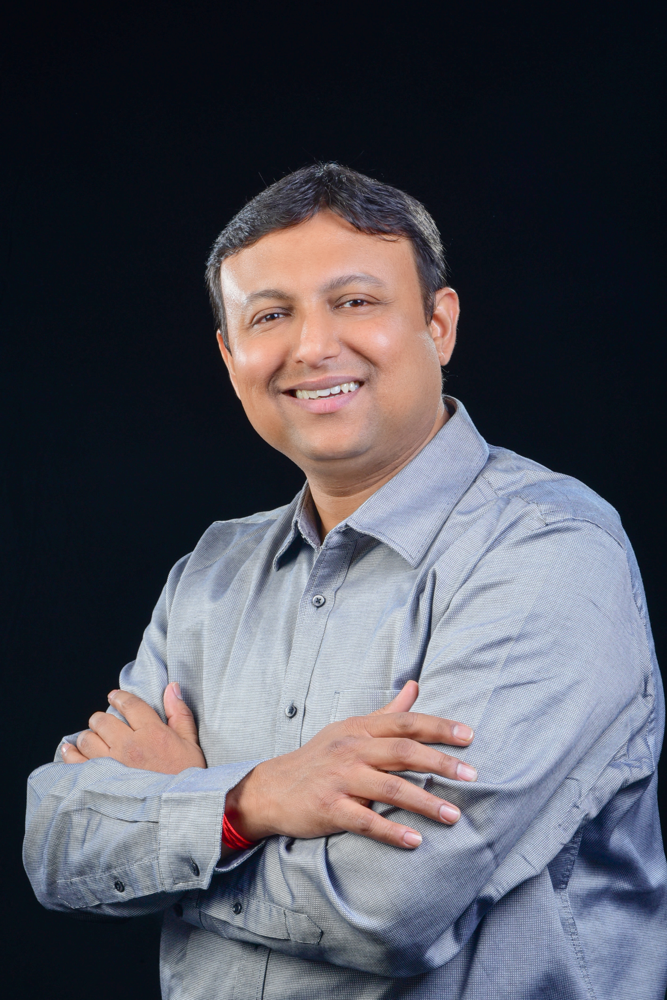

The man beneath the roles.
Platform of Papas began with a question many responsible men eventually face: who are you when your job, responsibilities, and provider identity no longer tell you who to be?

A familiar definition of success
Vishal grew up with a familiar map: study hard, build a career, fulfil your responsibilities, and keep performing. He followed it completely. Work became more than something he did. It became the structure around his identity and the clearest proof that he was doing life correctly.
He was capable, committed, and moving forward. From the outside, the path made sense. But external success did not automatically teach him how to understand himself or lead himself through the life he was creating.
Forbes India featured Vishal as part of Influential Leaders Creating Global Impact.
When the roles stopped providing the answer
Three months into his marriage, a professional crisis changed everything. The titles disappeared. The targets evaporated. The structure he had relied on to understand himself was suddenly gone.
"Who are you when all of that is gone?"
He did not have an easy answer. That absence sent him inward, toward the beliefs, fears, emotional habits, and definitions of success he had carried for years without consciously choosing them.
The work was not about controlling life. It was about leading himself.
Vishal began examining the patterns, expectations, emotional habits, and need for approval that had quietly shaped his decisions. He learned to ask a different question: What is within my leadership?
As awareness became responsibility and responsibility became action, the change became visible in his decisions, communication, work, marriage, and participation in family life.
The lesson became the foundation of Platform of Papas: a father does not need perfect circumstances or different people around him before he can begin. He can begin with himself.
Why Platform of Papas exists
Respect the intention
Most fathers care deeply. They work hard, provide, protect, and carry responsibility. The problem is not a lack of love. It is that important parts of life can still be shaped by autopilot, inherited definitions, and emotional patterns they never consciously chose.
Expand what responsibility means
- Understand the patterns shaping how you show up
- Lead your emotions, attention, decisions, and boundaries
- Align work, marriage, fatherhood, health, and purpose with your values
We help fathers lead themselves better, so they can lead their lives better.
Become a more self-led man - and let your fatherhood change as a consequence.
You do not need to become perfect or abandon your ambition. You need to understand yourself, lead yourself, and make the next honest decision.